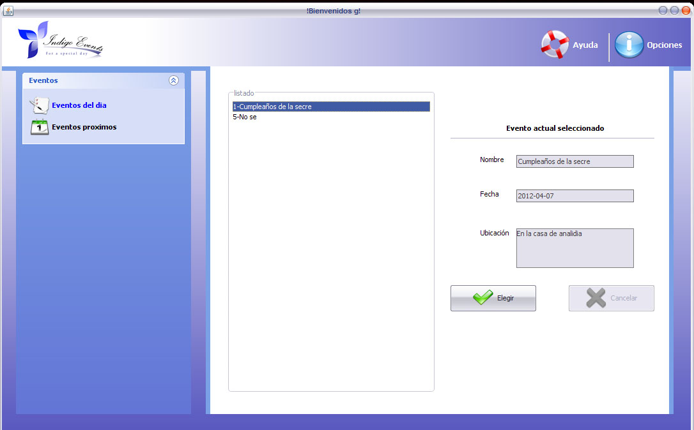
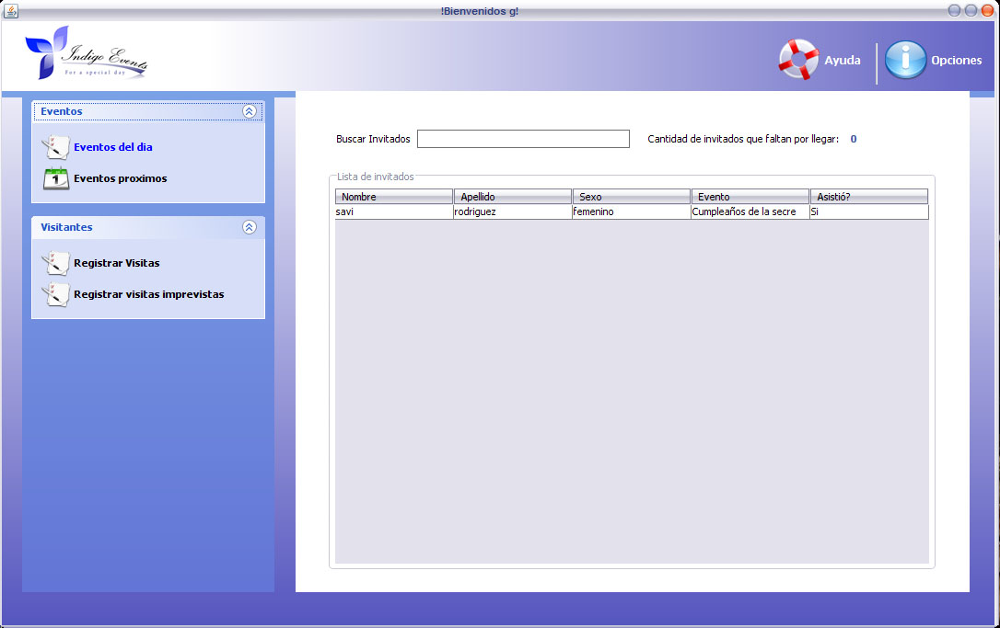
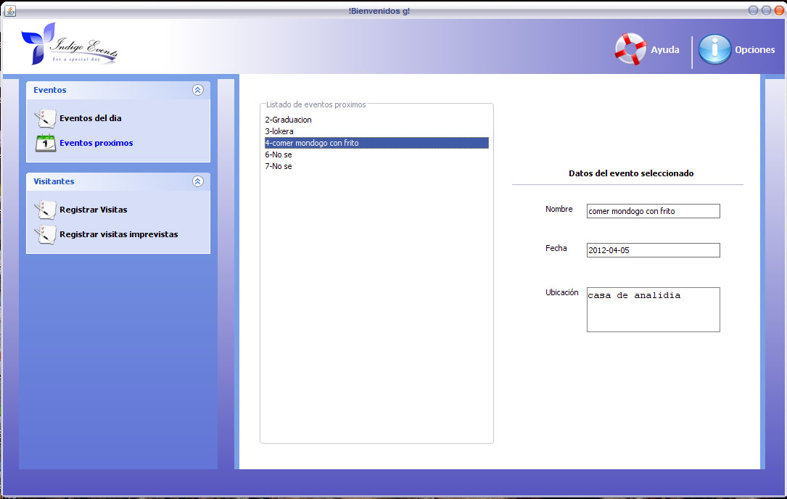
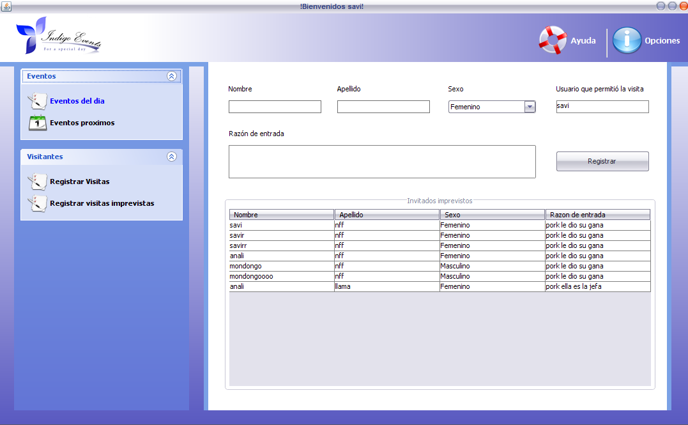

Ventana Portero
Eventos del dia

La ventana de Eventos de el Dia se divide en tres partes en lado izquiedo estan los menus, en el centro el listado,y en la parte derecha estan las opciones que trabajaran con el evento selecciona.
- Barra de menus: En los menu del portero puede selecionar las diferentes ventanas con que se quiere trabajar.
- Lista de Eventos: Despues de iniciar secion automaticamente saldra una lista de los eventos que son de el dia.
- Seleccion de los Eventos: En la parte derecha estan la seleccion de los eventos, cuando eliges un evento automaticamente te saldra los datos correspondientes.
Busca de Invitados

La ventana de Busqueda de los Eventos se divide en tres partes en lado izquiedo estan los menus, en el centro aparecen los tablas registros, y en la parte arriba del centro esta la opcion de buscar los registros.
- Barra de menus: En los menu del portero puede selecionar las diferentes ventanas con que se quiere trabajar.
- Barra de Busqueda: El usuario ingresa el registro que desea buscar.
- Tablas de Registro: En esta area se localizan los registros ingresados por el usuario.
Eventos Proximos

La ventana de Eventos Proximos se divide en tres partes en lado izquiedo estan los menus, en el centro aparecen la lista de los eventos proximos, y en la parte derecha estan las opciones que trabajaran con el evento seleccionado.
- Barra de menus: En los menu del portero puede selecionar las diferentes ventanas con que se quiere trabajar.
- Lista de Eventos: Despues de iniciar secion automaticamente saldra una lista de los eventos proximos.
- Seleccion de los Eventos: En la parte derecha estan la seleccion de los eventos, cuando eliges un evento automaticamente te saldra los datos correspondientes.
Visitas Imprevistas

La ventana de Eventos Proximos se divide en tres partes en lado izquiedo estan los menus, en el centro aparecen los tablas registros, y en la parte arriba esta la opcion de ingresar visitas imprevistas.
- Barra de menus: En los menu del portero puede selecionar las diferentes ventanas con que se quiere trabajar.
- Tablas de Registro: En esta area se localizan los registros ingresados por el usuario.
- Ingreso de Registro: Esta parte se utiliza para ingresar las visitas imprevistas que automaticamente se registra mas abajo.
Copyright © <2012>, <Indigo Events>
Created with the Freeware Edition of HelpNDoc: Easily create Help documents